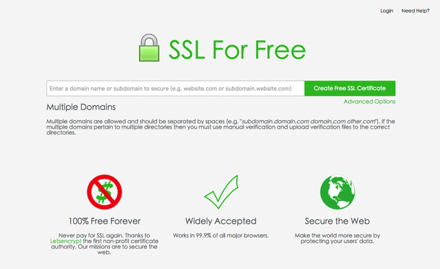
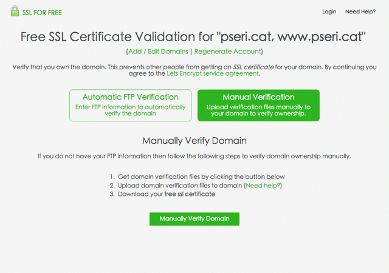
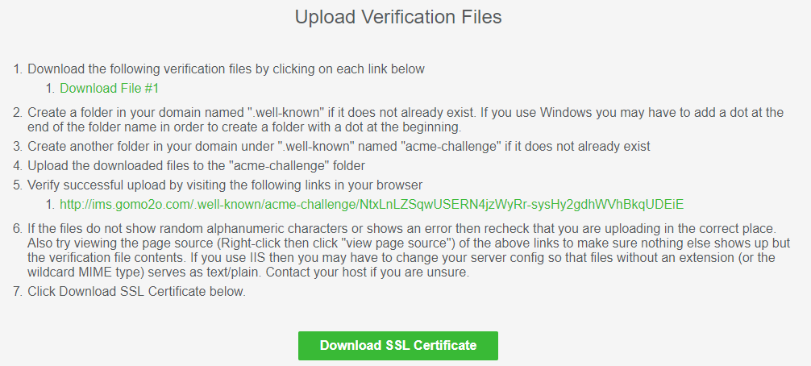
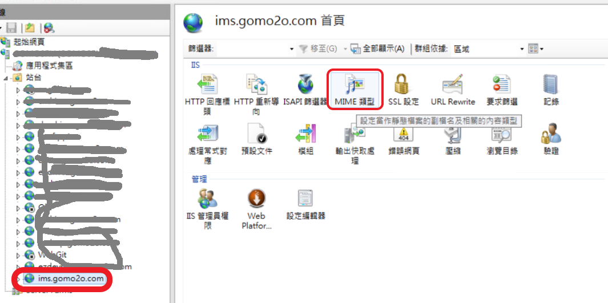
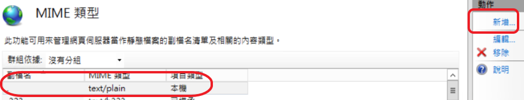
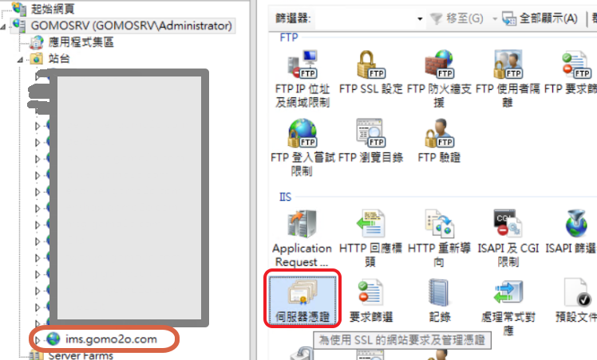

記錄免費憑證的使用
申請免費的憑證的使用
記錄一下免費憑證的申請和放到IIS
- 開啟 SSL For Free 網站後，直接在上方填入你要申請 Let’s Encrypt 憑證的網域名稱，可以用空白來分隔不同的網址，
例如「subdomain.domain.com domain.com other.com」，填入後點選右邊的「Create Free SSL Certificate」繼續。  - 為了確定這個網域名稱使你所有，會有兩種驗證方式，如果你的網站本身開啟 FTP 功能的話，可使用「Automatic FTP Verification」
來輸入相關資訊完成驗證；因為要將驗證分段操作給讀者看，所以我選擇使用手動的驗證方式，必須自己下載檔案，依照說明上傳到主機。
點選後，點選下方的「Manually Verify Domain」繼續。  - 點選網站上提供的檔案下載鏈結，依照說明順序建立兩層資料夾，將檔案放進去即可。記得要按下圖第 5 步驟的鏈結來看看能否正常讀取檔案，如果不行，代表你的路徑可能錯誤，總之呢要讓鏈結都能正常開啟，
使SSL For Free能夠正常驗證你的站台。 先在網站建立一個資料夾叫 *.well-known/acme-challenge* 將第一次下載的檔上傳到 .well-known/acme-challenge 下 這裡我相信很多人都是在這邊失敗、失敗、再失敗！無論如何就是沒有辦法讓驗證鏈結正常開啟！ 明明按照說明在站台建立好指定的路徑，也都正確放入驗證檔 在不斷的 google 找尋檔案後才發現原來因為他的鏈結路徑「.well-known\acme-challenge」*前面那個「.」關係*，站台認不出來！ 就會一直無法正常顯示，在 IIS 平台上要記得先行設定 MIME類型，讓 IIS 認得「.well-known\acme-challenge」鏈結路徑 或者直接在 IIS 平台的站台上點選進入「MIME 類型」。  加入「副檔名： . MIME 類型：text/plain」即可。  - 確定驗證連結沒有問題後，再點選最下方的「Download SSL Certificate」，通過驗證後，SSL For Free 就會開始產生 SSL 憑證
- 當憑證產生後，你就能在最終的結果頁面看到這些資訊。不過在此之前，我會建議你先找到如下面擷圖標示出來的「Get Notified of Expiration」欄位，
設定一組 Email 和密碼，即可在憑證過期前取得通知，以免錯過延長（renew）時間。 - 從網頁最下方點選「Download All SSL Certificate Files」就能打包這些檔案，
解壓縮後可以取得一個私密金鑰（Privacy Key）、CA_bundle.crt 和 certificate.crt
三個檔案，返回你的主機控制台，即可將憑證安裝進去囉！ - 產生的憑證是 .crt 非 .pfx，IIS 憑台只能使用 .pfx 憑證檔，所以這時候就需要透過工具做轉換，
我們到 OpenSSL for Windows 去下載 OpenSSL 回來，並把他安裝完成 - 安裝完成後，開啟命令提示字元，透過下面的指令來執行格式轉換，
過程中，OpenSSL 會要我們輸入一個保護 SSL 憑證的密碼（密碼在後面 IIS 匯入時會用到）
注意：指令中 D:\Downloads\sslforfree\ 是電腦的路徑，請更改你放憑證檔的路徑。1
D:\OpenSSL-Win64\bin\openssl pkcs12 -export -out D:\Downloads\sslforfree\certificate.pfx -inkey D:\Downloads\sslforfree\private.key -in D:\Downloads\sslforfree\certificate.crt -certfile D:\Downloads\sslforfree\ca_bundle.crt
- 執行完畢後，PKCS#12 憑證檔 certificate.pfx 就會產生在我們指定的目錄下面（檔案類型為個人資訊交換）。
- 我們只要把PKCS#12 憑證檔上傳到 IIS 的站台，請至 IIS 點選「伺服器憑證」  點選右邊動作「匯入 …」。 在匯入憑證視窗，點選「…」，選擇你產生出來的 certificate.pfx 憑證檔 並輸入之前使用 OpenSSL 轉檔時的密碼。 站台新增繫結，請先點選你的站台，在右邊動作點選「繫結」，於站台繫結點選「新增」。 類型選擇「https」，SSL 憑證就直接點選你剛剛放入的憑證。